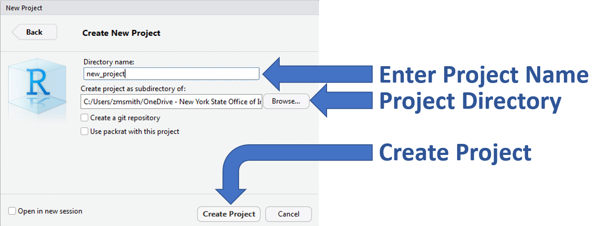

6 Lesson 1: R Project Development
6.1 Overview
- Easier to access files (relative path)
- Relative paths help prevent broken paths
- In general, DO NOT use setwd()
- Will work if the project folder is moved to a new location on you local machine or moved to a new machine.
- Relative paths help prevent broken paths
- Designed to easily integrate with version control (GIT)
- In general, all data, scripts, and output should be stored within the project directory.
6.2 Create a New R Project
- Create a new R project by clicking on the drop-down menu at the top right of RStudio and selecting “New Project”

- Select “New Directory” within the “Create Project” window

- Select “New Project” within the “Project Type” window

- Enter a project name(below I have given the name “new_project”), the project directory (where the project should live), and select “Create Project”
- Tip: Create a “project” folder that will act as your parent directory for all R projects. This will make it much easier to navigate to and between projects.

- A new session specific to your R project will start within RStudio
- There are a number of ways to tell which project is open…

6.4 Recommended Workflow
- Set up a GitHub repository.
- Create an R-project connected to the GitHub repository.
- Develop R-scripts.
- Push and pull project changes to and from GitHub.

6.5 Your Turn
- Open R Studio.
- Create a new Project.
- Add an “data” folder and add the example data set to this folder.
- Create a new R Script (Ctrl + Shift + N) and save the script as “lesson_1.R” to your project root folder.
- Add the following script and run it (Ctrl + Enter)
- Notice that the entire file path to CSV of interest (“zms_thesis_metrics.csv”) was not specified just
file.path("data", "zms_thesis_metrics.csv").
- Notice that the entire file path to CSV of interest (“zms_thesis_metrics.csv”) was not specified just
thesis.df <- read.csv(file.path("data",
"zms_thesis_metrics.csv"),
stringsAsFactors = FALSE)
head(thesis.df)- View
thesis.dfin the Environment panel- How many rows and columns does our data frame have?
- Click on the drop-down menu (the blue circle to the left of
thesis.df).- Can you identify the column type (e.g., Character, Numeric, Integer, or Factor) of the columns
unique_id,substrate_size_d50,richness, andpct_diptera? - What are the first, second, and third
unique_id’s represented in the data frame and whichrichnessvalues are associated with eachunique_id?
- Can you identify the column type (e.g., Character, Numeric, Integer, or Factor) of the columns
- Click on the button to view the data (the small girdded table to the far-right of
thesis.df)- Filter the data frame to only see data from Onondaga Lake (
lake= “onon”)
- Filter the data frame to only see data from Onondaga Lake (